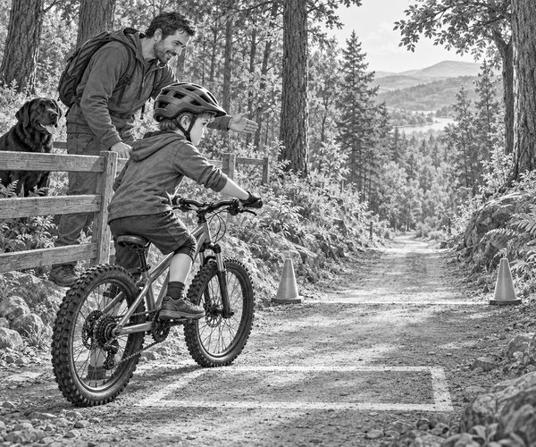

FICTION
Tom looked down Fox Trail.
The path curled between tall pine trees.
It was not a racing trail.
But it had one long, steep slope.
Tom wanted to ride it.
His hands felt tight on the handlebars.
“I might go too fast,” he said.
Dad pointed towards the little practice hill.
“Then we will learn how to go slowly first.”
Scout waited behind the wooden fence.
He could watch without running onto the bike trail.
Tom put on his helmet.
Dad checked the helmet strap.
He checked both tyres and both brakes.
Then Tom rolled towards the practice slope.
A white box was painted on the flat ground at the bottom.
Tom used only his back brake.
The back tyre skidded.
It drew a wiggly line in the dust.
Tom stopped past the box.
“A skid looks exciting,” Dad said.
“But a rolling tyre has more grip.”
Dad showed Tom the two brake levers.
“Use both brakes,” he said.
“Squeeze them smoothly, like two dimmer switches.”
“Not like two light switches?” asked Tom.
Dad smiled.
“Exactly. Do not grab them on all at once.”
Bike fact: The front brake usually gives more stopping power. The back brake helps the bike stay steady. Using both brakes smoothly gives a rider good control.
Tom tried again.
He covered both levers with his fingers.
He looked towards the stopping box.
Then he gently squeezed both brakes.
The bike slowed.
The tyres kept rolling.
Tom stopped inside the box.
Scout wagged his tail.
Tom practised five more times.
Each stop became calm and quiet.
At last, Dad nodded towards Fox Trail.
“Ready for the descent?”
Tom took a slow breath.
“Ready.”
Dad rode in front for the first part.
Tom followed with plenty of space.
He kept his pedals level.
He bent his elbows and looked ahead.
Trail fact: Riders should slow down before a tricky part of a trail. Hard braking in the middle of loose stones or a sharp turn can make the tyres lose grip.
The steep slope began.
Tom's bike wanted to speed up.
He squeezed both brakes a little.
The bike slowed.
He loosened his fingers slightly.
The bike rolled forwards again.
Squeeze.
Roll.
Squeeze.
Roll.
Halfway down, Dad pointed to a patch of loose stones.
Tom saw them early.
He slowed before reaching them.
Then he let the tyres roll across.
The bike stayed straight.
No tyre skidded.
The final bend swept around a pine tree.
Tom looked towards the open path beyond it.
He used both brakes before the turn.
Then he rolled around the bend.
The bottom of the trail appeared.
Tom crossed the finish marker at a calm speed.
Dad stopped beside him.
“You rode the steepest trail,” Dad said.
Tom shook his head.
“I rode it slowly.”
They pushed their bikes back to Scout.
Tom looked up at the long slope.
It did not seem quite so steep now.
He had not beaten Fox Trail with speed.
He had beaten it with two brakes and a calm plan.
1. Why did Tom practise on the small slope?
2. How did Dad tell Tom to squeeze the brakes?
3. What did Tom do before the loose stones?